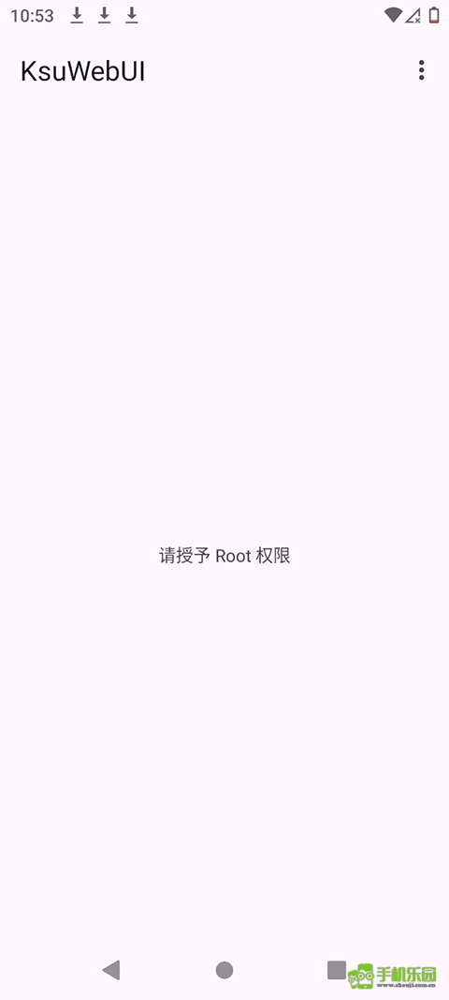
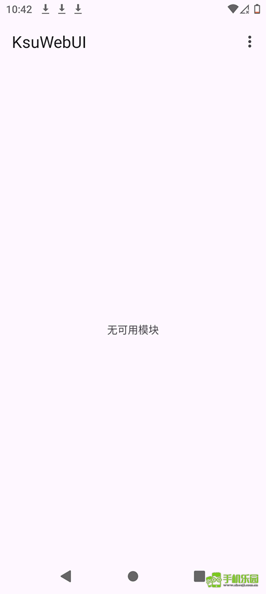

KsuWebUI 从入门到上手：手机 root 管理的浏览器捷径
不想每次都掏手机点来点去管理 root 模块？KsuWebUI 把 KernelSU 的管理界面搬到了浏览器上。本教程带你从零启动、连接、管理授权和备份，十分钟搞定。
这篇教程结束时，你可以在电脑浏览器上远程管理 Android 手机的 root 权限、启停模块、导出备份，全程不用碰手机屏幕。
准备：三件事先确认
动手前先把三个条件理顺——缺了哪个都跑不起来。
第一，手机已经刷了 KernelSU。 去KsuWebUI官网看一眼就知道它是什么了——KsuWebUI 是 KernelSU 的 Web 管理组件，Magisk 用户用不了它。如果你还在 Magisk 体系里，先换到 KernelSU 再往下走。确认方法：手机应用列表里能找到 KernelSU Manager。
第二，手机和电脑在同一个局域网。 家里的 Wi-Fi、办公室的内网都行。一个在 5GHz 一个在 2.4GHz 没关系，同一台路由器下面就能互访。
第三，电脑上有个正常的浏览器。 Chrome、Edge、Firefox 都行，不需要装任何插件。建议 Chrome，兼容性最好。
第一步：在手机上启动 WebUI
打开 KernelSU Manager，找到「WebUI」或者「网页管理」入口。不同版本位置略有差异——有的在侧栏，有的在主页底部。点进去之后会看到这样一个界面：

别急着点「启动」，先看一眼界面上显示的端口号。默认通常是 6789，但有些固件会改掉这个值。记下这个数字，后面要用。
点「启动」后，手机会弹出一个提示——大致意思是 Web 服务已开启、可通过浏览器访问。这时候保持这个页面亮着或者锁屏都行，只要别手动把 KernelSU Manager 杀掉。
第二步：用电脑浏览器连接
打开电脑浏览器，地址栏输入 http://手机IP:端口号。
手机 IP 怎么找？在手机上进「设置 → Wi-Fi → 当前连接的详情页」，里面会显示一串 192.168.x.x 的数字。把 IP 和刚才记下的端口拼在一起，比如 http://192.168.1.102:6789，回车。
第一次连接时浏览器大概率会弹一个安全警告——因为 KsuWebUI 用的是自签名证书。放心继续访问就行，局域网内部的 HTTPS 警告不是真的有风险。
连上之后你会看到 KsuWebUI 的主界面，左侧是导航栏，右侧是内容区。接下来的操作全部在这里完成，手机可以放一边了。
第三步：管一管你的 Root 授权
连上了先别着急动模块——建议第一件事去看看「授权应用」页面。root 权限给出去容易收回来难，定期检查是个好习惯。
左侧导航找到「Root 权限」分组，点「授权应用」。右侧会列出所有拿过 root 的 APP，每一条显示：
- APP 图标和名字
- 什么时候授权的
- 最近一次用 root 是什么时候
扫一眼这个列表。有没有看着陌生的 APP 排在上面？有没有很久以前装的 APP 还挂在永久授权？这些就是安全隐患。比如一个普通的记账 APP 不该要 root，一个你卸载了的工具还留着授权记录，都应该点进去撤销。
撤销操作很简单：点那条记录，在详情页找「撤销授权」按钮，确认就完事。KsuWebUI 和底层 KernelSU 框架用的是同一份权限数据，这边撤了那边同步生效，不用两边都改。
第四步：模块启停与批量管理
接下来进入模块管理，这是 KsuWebUI 最省心的部分。左侧点「模块管理」，右侧会列出当前所有已安装的模块。
每个模块右侧有一个开关。拉到「开」就是启用，「关」就是禁用。注意：KsuWebUI 禁用模块不等于卸载——模块包还在，只是下次开机不加载。这个设计特别实用，当你怀疑某个模块导致手机异常时，先禁用观察几天，确认有问题再彻底卸载，省得来回跑KsuWebUI下载拿包重装。

如果同时装了五六个模块，一个一个点开关太慢。找一下列表顶部的「批量操作」按钮，或者长按任意一个模块进入多选模式——勾选完想动的模块，统一启用或禁用，一次搞定。
重要提醒：大多数模块的启停需要重启手机才生效。少数只改系统属性的模块支持热切换，但涉及文件替换、服务启动的模块不行。KsuWebUI 会在你切换开关后提示「下次重启生效」，别以为没反应就是坏了。
第五步：做一份备份——刷机前的保险
准备刷机、换系统或者换手机了？先把模块配置备份一份，不然新系统装完所有模块又要从头调一遍。
左侧导航找到「备份」功能，进去后默认全选了所有可备份项：模块列表、每个模块的配置数据、内核参数、root 授权记录。不用改，直接选一个备份保存位置，等进度条走完就行。备份功能的完整选项和恢复步骤在KsuWebUI文档里写得更细，有需要可以对照着来。
备份文件是一个压缩包，建议：
- 导出后复制到电脑上存一份——手机丢了或彻底变砖还能找回来
- 备份文件别随便外传——里面包含了 root 配置细节
- 每次大规模调整模块后都顺手备一份，花不了三分钟
常见卡点和解法
卡点一：浏览器输入地址后打不开页面。 先确认手机 WebUI 真的启动了、端口号没记错、电脑和手机确实在同一 Wi-Fi。还不行的话，把手机上运行 KernelSU Manager 的那个页面保持在前台再试一次——有些省电策略会杀掉后台服务。
卡点二：HTTPS 警告后继续访问，页面是空白的。 大概率是浏览器缓存问题，按 Ctrl+Shift+R 强制刷新试试。不行就换个浏览器，Chrome 不行换 Edge。
卡点三：备份文件恢复后有些模块没恢复成功。 检查一下这些模块对应的 ZIP 包是不是还在——备份只存配置，不存模块本体。恢复前先把之前的模块包装回去，再导入备份数据。
进阶方向
基础操作跑通之后，你可以试试 KsuWebUI 的内核参数调整功能——在「内核设置」页面可以改 CPU 调度器、频率阈值、温控，调整完重启就能生效。这部分属于进阶玩法，改之前建议先备份当前参数，调错了能快速回滚。
总的来说，KsuWebUI 把 KernelSU 管理从小小的手机屏幕搬到了舒适的浏览器里，批量启停模块、远程查授权、导出备份这些操作都省心了不少。花十分钟把局域网打通之后，下次再调 root 相关的东西你就不会想再掏手机了。
关于这套资料，维护者在GitHub、Gitee、GitCode 三个仓库都同步了同一份内容，国内网络环境下可以选访问最快的那份来查，遇到问题换个仓库试试说不定就能打开。